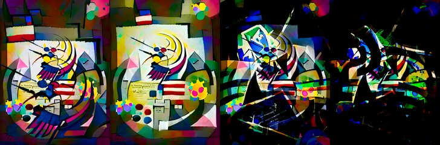

← Async Art — living works · all collections
by Mad Monk · Async Art Master #4544 · four-phase · time rule: UTC
Updates four times a day to reflect sunrise / day / sunset / night cycles.

Sunrise 06:00–06:59 · Day 07:00–17:59 · Sunset 18:00–18:59 · Night 19:00–05:59 (UTC)
The viewer shows these states from display copies kept with this site (resized WebP files; the originals are the files below). The full-size files live on IPFS; each is linked on three public gateways, in the order to try them (gateway.pinata.cloud, ipfs.io, dweb.link). Every line says what our own check found: 5 we keep this file pinned, 1 our own copy, pinned here and verified on upload.
QmYkRRV9RgFyD4… gateway.pinata.cloud · ipfs.io · dweb.link — we keep this file pinned, checked 2026-09-24 11:46QmeYbsd6nCBXUZ… gateway.pinata.cloud · ipfs.io · dweb.link — we keep this file pinned, checked 2026-09-24 11:46Qme3YykZrY9EKc… gateway.pinata.cloud · ipfs.io · dweb.link — we keep this file pinned, checked 2026-09-24 11:46QmdfWkaf5YY2Xt… gateway.pinata.cloud · ipfs.io · dweb.link — we keep this file pinned, checked 2026-09-24 11:46bafybeif2b6zbt… gateway.pinata.cloud · ipfs.io · dweb.link — our own copy, pinned here and verified on upload, checked 2026-09-22QmeNHGKJTZREvU… gateway.pinata.cloud · ipfs.io · dweb.link — we keep this file pinned, checked 2026-09-24 11:46QmeYbsd6nCBXUZ… gateway.pinata.cloud · ipfs.io · dweb.link — we keep this file pinned, checked 2026-09-24 11:46QmeYbsd6nCBXUZ… gateway.pinata.cloud · ipfs.io · dweb.link — we keep this file pinned, checked 2026-09-24 11:46QmdfWkaf5YY2Xt… gateway.pinata.cloud · ipfs.io · dweb.link — we keep this file pinned, checked 2026-09-24 11:46QmYkRRV9RgFyD4… gateway.pinata.cloud · ipfs.io · dweb.link — we keep this file pinned, checked 2026-09-24 11:46Qme3YykZrY9EKc… gateway.pinata.cloud · ipfs.io · dweb.link — we keep this file pinned, checked 2026-09-24 11:46Preamble of the Constitution of The United States by Mad Monk Minted on Async Art ... Created December 2021 by image generation through inputting the preamble of the US Constitution. Resulting images were extensively edited before finalizing. There are specific articles and specific words from the preamble that will be minted on different platforms. Here on Async Art, the version minted is the whole of the of the preamble with certain variations that comes in 4 different artworks combined in Day and Night cycle. ... "We the People of the United States, in Order to form a more perfect Union, establish Justice, insure domestic Tranquility, provide for the common defense, promote the…
async.art · OpenSea · Etherscan
Generated archive pages. Content identifiers point to the public IPFS network.